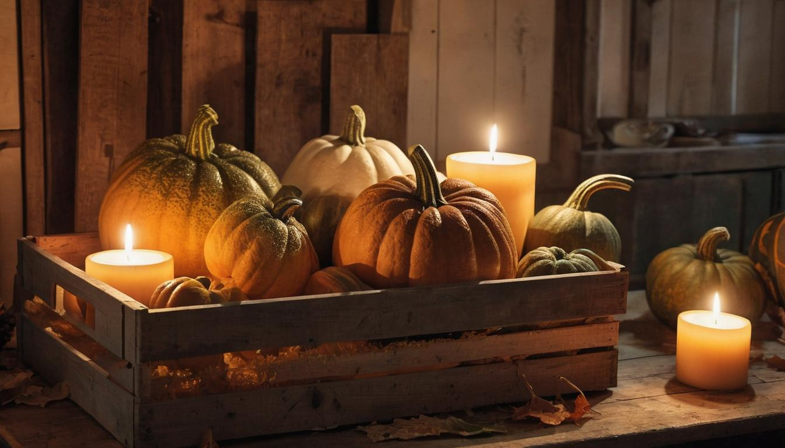
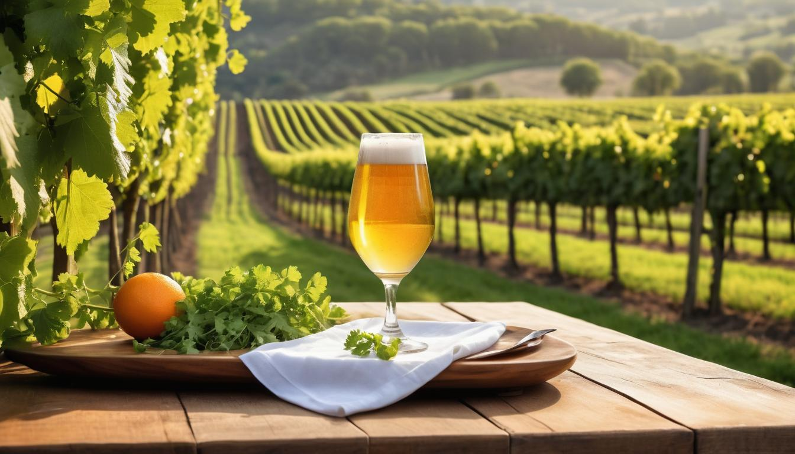
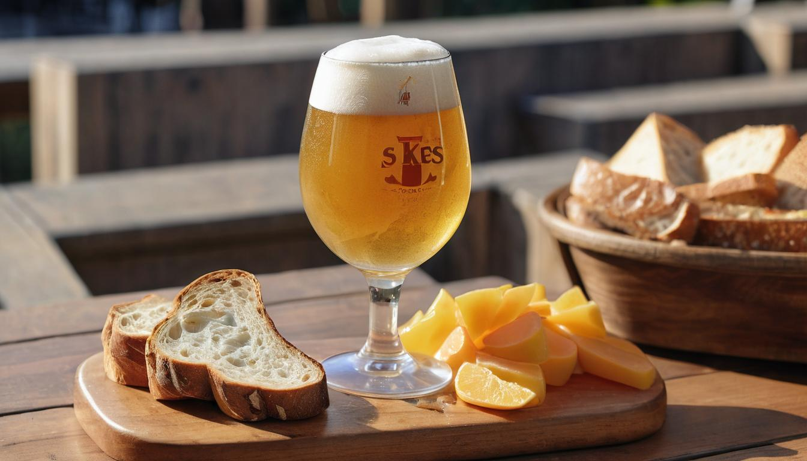

Unique Saison Flavors
If you're passionate about homebrewing or simply enjoy a well-crafted beer, diving into the world of Saison offers an intriguing journey. Often known as "farmhouse ale," this style has captivated enthusiasts for its distinctive flavors and rich history. But what sets Saison apart from other beers? It's more than just a drink—it's a blend of tradition, technique, and regional character that tells a story with every sip.
Imagine brewing your own Saison, where you control every element from the type of grains used to the specific strains of yeast that develop its complex profile. This isn't just another guide; it's a distilled collection of extensive research and hands-on experience curated to enhance your brewing skills. As we explore the fascinating background and meticulous process behind this iconic beer style, you'll gain insights that will elevate your craft to new heights.
Saison beer is known for its pale color, high carbonation, dryness, fruity and spicy flavors. Its brewing process traditionally involves low alcohol levels and the use of diastatic yeast strains that lead to high attenuation, resulting in a dry finish. When brewed seasonally, it was historically made with malted spelt, unmalted wheat, and a small amount of barley malt. However, modern productions of the style have varied in terms of alcohol levels and can include different spices such as orange zest, coriander, and ginger.

Origins of the Saison Beer
The captivating history of Saison beer is interwoven with Belgium's cultural traditions and the agricultural rhythms of rural life. The French-speaking region of Wallonia in Belgium, with its long tradition of brewing, is where Saison beer had its humble beginnings. Originally brewed in farmhouses during the winter months, this beer was carefully stored and eagerly anticipated for summer consumption by the seasonal farmworkers, known as "saisonniers."
Picture this: As winter loosened its grip and the days grew warmer, these farmworkers would return to the fields, eager to quench their thirst with a refreshing and complex ale. The brewing of Saison beer wasn't just a hobby; it was a necessity driven by practicality. Brewed during the cooler months when temperatures were low enough to prevent spoilage, the seasonal nature of production meant that each batch had to last throughout the summer months.
The term "saison" translates to "season" in English, which echoes the seasonal brewing and consumption patterns from which this beer style derives its name.
Traditional Ingredients and Farmhouse Influence
Traditionally, Saisons were crafted using a blend of grains consisting of malted barley, wheat, and spelt—reflecting the abundance of crops readily available on the farms. Furthermore, local spices and herbs were often added, infusing every batch with unique flavors from the specific terroir of each farm.
In the late 1980s, Brasserie Dupont's iconic Saison Dupont took its initial steps into America. This ignited a wave of interest and enthusiasm for this distinctive farmhouse ale. As it gained popularity across different regions in the U.S., it helped solidify Saison beer's reputation as a beloved and cherished style among beer aficionados.
Like an heirloom being rediscovered and cherished by a wider audience, Brasserie Dupont's Saison Dupont encapsulated the vibrant spirit of craft brewing that resonated deeply with people who appreciated traditional methods and unique flavors.
The historical evolution and cross-cultural influences have significantly contributed to shaping Saison beer into what it is today—a celebrated style known for its rich history, diverse flavors, and deep-rooted connection to agricultural traditions.
Brewing Process and Key Ingredients
Brewing a Saison is an art form that revolves around carefully selecting and blending specific grains, hops, yeast, and fermentation techniques to create a refreshing, complex ale. Each step in the brewing process plays a crucial role in shaping the aromatic, flavorful profile for which Saisons are renowned.
Originating from humble farmsteads in Wallonia, Belgium, traditional Saisons were crafted to be rustic, hearty ales that quenched the thirst of seasonal farmworkers. Today, this style has garnered global acclaim for its delightful fusion of fruity, spicy, and earthy notes.
Step I - Choosing the Grains
The foundation of any great Saison lies in the selection of grains. Typically, a harmonious blend of malted barley, wheat, and occasionally spelt forms the backbone of the beer. This combination imparts a well-rounded grain profile with subtle nuances that elevate the overall drinking experience. The use of wheat contributes to the beer's effervescence and light body, while spelt adds an intriguing layer of complexity.
Step II - Adding Hops and Boil
Once the grain bill is established, the addition of hops during the boiling phase further complements the Saison's flavor profile. European noble hops such as Saaz or Styrian Goldings are often employed to imbue the brew with a delicate balance of bitterness and enticing aroma. These hops contribute floral, herbal, and sometimes earthy qualities to complement the spicy and fruity esters derived from the yeast.
For instance, Saaz hops lend a mild bitterness along with a pleasant earthiness, while Styrian Goldings offer floral and delicate spice characteristics that intertwine beautifully with the rest of the ingredients.
Step III - The Importance of Yeast
Perhaps one of the most critical elements in crafting a Saison is selecting the right yeast strain. Diastatic yeast strains take center stage here. These special strains hold the key to unleashing an array of distinctive flavors by breaking down more sugars during fermentation than conventional strains. This enzymatic activity contributes to achieving Saison's hallmark dryness and effervescence while accentuating its characteristic fruitiness and spiciness.
Furthermore, some brewers may opt to introduce Brettanomyces (Brett) into their yeast regimen to impart an additional layer of complexity and funkiness to their Saisons. This wild yeast is notorious for producing earthy, farmhouse-like flavors and aromas that lend an adventurous twist to traditional Saison profiles.
Step IV - Fermentation and Conditioning
As fermentation unfolds, Saisons thrive in a distinctively warm environment; primary fermentation often occurs at elevated temperatures – sometimes reaching up to 90°F. This higher temperature fosters the development of fruity and spicy esters that are integral to defining the beer's aromatic bouquet and palate. Following primary fermentation, many Saisons undergo bottle conditioning as part of their maturation process, resulting in a natural carbonation that further enhances their lively effervescence.
Understanding these meticulous steps in the brewing process sheds light on how each ingredient and technique contributes to crafting a Saison beer with unparalleled depth and character.
Unique Flavors and Aromas
Saison beers offer a symphony of flavors, each complementing the other to create a complex and delightful taste. Picture taking a sip of a well-crafted saison beer. The first thing you'll notice is a burst of fruity notes permeating your senses. It's the kind of fruitiness that might remind you of biting into a luscious ripe apple or indulging in the juiciness of a pear. These fruity notes are not overpowering but rather gentle and inviting, setting the stage for what's to come.
The yeast used in brewing saison beers contributes an essential element to this harmonious blend. It brings out mild spiciness that adds just the right kick to the flavor profile. Much like a sprinkle of black pepper or a hint of clove, this subtle spiciness dances alongside the fruity notes, creating a delightful contrast that keeps you sipping.
How Spices Elevate the Flavor
Aside from the natural flavors produced during fermentation, additional spices like coriander or orange zest can be incorporated into the brewing process. These spices work in harmony with the fruity and spicy elements, further enhancing and elevating the overall flavor profile. Imagine it as an artist adding vibrant colors to their canvas, each stroke enhancing the beauty of the masterpiece.
"The delicate balance between these different elements is what gives saison beers their unique charm." - Master Brewer Insider
These flavors are all beautifully rounded off by the malt base, offering a subtle taste akin to fresh bread or perhaps a warm biscuit. This element adds depth to the overall flavor profile, acting as a dependable support for the fruity and spicy counterparts.
Aromas that Delight
Now, let's talk about aroma. A well-crafted saison beer presents you with an enchanting bouquet that reflects its impressive flavor profile. As you bring the glass closer to your nose, you're greeted with an elegant blend of those familiar fruity and spicy notes, intertwining to create an olfactory experience worth savoring. This interplay may even include a touch of earthiness if Brett yeast is used in the brewing process.
To illustrate this further, picture walking through an orchard on a breezy day, where the air carries subtle scents of ripe fruits and whispers of spice floating around you. It's this essence that makes saison beer so captivating—the ability to transport you to these picturesque landscapes with every sip.
In understanding these unique flavors and aromas, we gain insight into what makes saison beers truly exceptional. Each element works together in perfect harmony, creating an enchanting sensory experience that continues to captivate beer enthusiasts worldwide.
Tasting Notes: What to Expect
When tasting a Saison, it's akin to embarking on a journey of the senses. Pay attention to how the beer looks because the appearance is the first clue about what's inside.
The Visual Experience
Saison beers present a range of colors from pale to amber, often with a hazy, unfiltered appearance. The frothy white head hints at its playful effervescence, indicating that you're in for a refreshing and lively experience.
Characteristics
| Characteristics | Description |
|---|---|
| Color | Ranges from pale to amber |
| Clarity | Hazy and unfiltered |
| Head | Frothy and white |
As the glass is raised, take a moment to appreciate the soft radiance hinting at the delicate flavors waiting to unfold.
Aromas that Stir the Imagination
Inhale deeply to detect an array of fragrant aromas. The citrusy notes are like a burst of sunshine; just as refreshing and invigorating. Hints of pepper add a subtle kick, while the earthy undertones provide depth and balance.
Consider this:
- Citrus: A burst of freshness
- Pepper: A hint of spice
- Earthiness: Adding depth
The interplay of these aromas sets the stage for what's to come, preparing you for the delightful complex dance of flavors that follow.
Taste Sensation Unveiled
Now comes the best part, the taste. The initial sip will greet your palate with a lively burst of citrus, breathing life into every corner of your mouth. Then comes the intricate spiciness derived from the yeast, adding layers to the overall flavor profile—an intriguing symphony of tastes where each note harmonizes perfectly with the next.
Take note:
- Citrus Burst: Lively and fresh
- Yeast Spiciness: Intriguing complexity
- Refreshing Mouthfeel: Light to medium-bodied with high carbonation
Sip slowly, allowing the complexities to reveal themselves one by one—unveiling a rich tapestry of flavors.
The Crisp and Dry Finish
As you reach the finish, you'll notice something distinctive about Saisons—a remarkable dryness lingering on your palate. This hallmark feature leaves behind a crisp yet slightly tart aftertaste; a perfect conclusion to your sensory adventure.
To summarize:
- Dry Finish: Signature characteristic
- Aftertaste: Crisp and slightly tart
And just like that, your journey through the world of Saison beer is complete. Its unique combination of characteristics creates an experience that is not easily forgotten—a delightful interplay of aroma, flavor, and texture that makes Saison truly exceptional.
After experiencing the tantalizing array of flavors in Saison beer, it's time to explore another crucial aspect—the ideal serving conditions that enhance this delightful beverage.
Ideal Serving Conditions

The choice of glass can surprisingly impact how a beer tastes and smells. To bring out the best in a Saison, consider using a tulip or wine glass, designed to concentrate the aromas as they rise, allowing you to fully appreciate the complex and enticing scent of the beer. When you take that first sip, you'll understand the difference this simple choice can make.
Now, let's talk temperature. The ideal serving temperature for a Saison is between 45-55°F (7-13°C). This falls between the standard serving temperatures for lagers and room temperature. This balance is essential—it's slightly warmer than a refreshing lager, yet cooler than room temperature. By serving at this temperature range, you're creating an optimal environment for the complex flavors and aromas of the Saison to truly shine, enhancing your overall drinking experience.
Pouring the beer also plays a crucial role in how it tastes. When handling a bottle-conditioned Saison, pour it gently to prevent disturbing the yeast sediment at the bottom of the bottle. Unless you prefer an extra-textured, cloudy pour, taking care during this step ensures a clearer pour while preserving the nuanced flavors of the beer.
Imagine savoring each sip of your freshly-poured Saison from a tulip glass, with the fragrance of its complex aromas wafting up as you lift it to your lips. The carefully maintained temperature accentuates its unique flavors, giving you a memorable drinking experience every time.
By understanding and implementing these ideal serving conditions, you'll truly elevate your enjoyment of Saison beer. Whether sipping it alone or sharing it with friends, these factors play a vital role in unlocking the full potential of this distinguished brew.
Understanding how to serve Saison beer optimally is just the beginning—a perfect beverage is only heightened by thoughtful pairings and seasonal enjoyment. Let's now explore how to fully immerse yourself in the experience with excellent food pairings and seasonal indulgences.
Seasonal Enjoyment and Pairings

Saison beers are like chameleons, transforming to fit the seasons. Their light and effervescent nature makes them perfect for hot summer days, quenching thirsts and complementing outdoor feasts. But don't let the warmth of your hearth hold you back from enjoying this delightful brew during colder months. It's a beer for all seasons, and when paired with the right foods, it becomes an essential part of any gathering or meal.
In summer, envision yourself unwinding in your backyard, relishing a chilled Saison while delectable aromas drift from the grill. Its zesty and peppery notes intertwining with the flavors of grilled seafood or chicken create a symphony that tantalizes the palate. The carbonation creates a refreshing sensation, perfect for balancing out the heat of spicy foods or refreshingly cleansing the palate after each bite.
Pairing Ideas:
| Pairing | Description |
|---|---|
| Grilled Seafood or Chicken | Zesty and peppery notes intertwine with smoky flavors, creating a tantalizing palate experience. |
| Salads with Tangy Vinaigrette | Saison's dryness adds depth to the salad, balancing its acidity for a harmonious taste. |
| Creamy Cheeses like Brie or Camembert | The delicate textures contrast beautifully with the crisp finish of Saison. |
Now, visualize winter settling in—frost on the windowpanes and hearty comfort food on the table. This is where Saison steps up its game by taking on spicier and warmer tones that pair exquisitely with roasted meats and root vegetables. A spiced version of Saison adds an extra layer of warmth and complexity to these comforting dishes.
Think of Saison as your versatile friend who seamlessly adapts to every occasion, just like a classic white shirt that works effortlessly from day to night, season to season.
Given its adaptability across various culinary landscapes, it's no wonder that Saison has made its way onto tables worldwide, earning its place as a beloved beer style that suits any season or celebration.
Seasons may change, but Saison remains ever reliable, offering a myriad of flavor profiles to enhance any dining experience throughout the year.
In closing, whether it's sipping a chilled Saison on a sunny afternoon or indulging in a spiced version by the fireplace in winter, this beer remains an exceptional choice for any occasion.